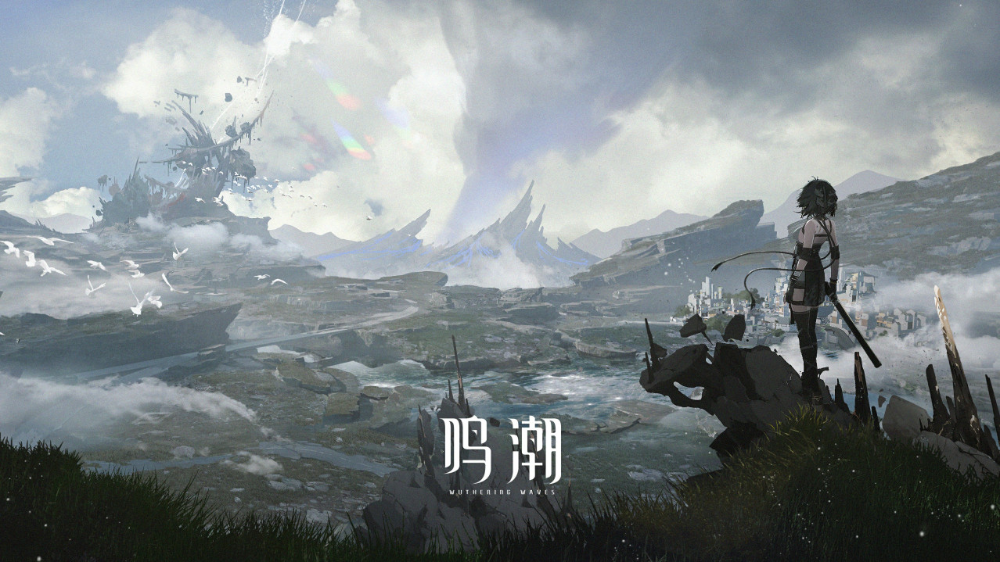

故事背景

漂泊的旅人，欢迎在这里醒来。
涨落无声，我们的世界刚刚经历一场退潮。
悲鸣降临，人类被旧日的法则遗留，文明于滩涂搁浅。
但静默之后，是不竭余力的发声。
随毁灭一同出现的异象，同样带来了新生，人类正与它们一起，开创全新纪元。
而你——漂泊者，你的旅途才刚刚开始。
或是邂逅并肩作战的伙伴，对峙无法想象的劲敌，或是吸纳改变自身的力量，揭露颠覆一切的真相，又或者，只是探索未曾目睹的奇观，尽可能延伸你能抵达的边界……我们无从知晓你将做出的选择，但我们期待你在灾厄余音中找到的答案。或许，你就是那个带领人类跨越滩涂的人。
潮声循环往复，文明再度启程。
请踏上，属于你的旅途。
世界观设定
索拉里斯
Sol-3，太阳星系的第三颗星球，从第一声“悲鸣”开始——新生事物涌现，旧日法则失效，前所未见的异象灾害在大地上肆虐。在这个毁灭与新生并存的全新世界里，人类秉持着不屈的文明星火，正欲抵御新一轮未知的危机浪潮。
海蚀现象
悲鸣之下，毁灭的浪潮对索拉世界产生了侵蚀作用。“无音区”、“残象潮”、“黑石”……种种在此显露出的侵蚀异象表现被统称为“海蚀现象”。
海蚀现象
悲鸣之下，毁灭的浪潮对索拉世界产生了侵蚀作用。“无音区”、“残象潮”、“黑石”……种种在此显露出的侵蚀异象表现被统称为“海蚀现象”。
无音区
现今学界认为“无音区”是残象的诞生区域，其出现往往伴随着遮蔽天空的倒悬之海及深刻于地表的十字星状声痕。万千残响在无音区中不断地反射、交织、重叠，白色的声弦连接了现实与彼端未知的空间，无数残象于此汇集。
共鸣者
能够与特定事物产生共鸣，感知并操控其频率的人类，被称作“共鸣者”。共鸣者能凭借体表的“声痕”施展“共鸣能力”，学界认为，大部分“共鸣能力”的类型与表现，往往与共鸣者的经历与潜意识密切相关。
残象
海蚀现象下，由残存混乱的频率能量构成的类生命体，外形不定，具备特殊结构“声核”，学界也称其为“残响体”。残象的本能是通过吞噬融合其他频率以维系自身稳定乃至进化，行为模式类似捕食。其能力、外形和行为因频率信息构成差异而有所不同，多为拟态。
残响
学界中有观点认为，在海蚀现象发生时，物质、信息和能量都会被还原为振动的频率，而过后残留下不断衰减的频率能量形态即为“残响”。据研究观测，回音一旦衰减便会成为残响，该过程不可逆。
回音
一种纯净，完整的频率能量形态，其记录的信息能够超越时空以某种形式稳定存在。经研究发现，海蚀现象的产物“黑石”可以完整封存承载“回音”能量。加以改造，可作为共鸣者可使用的强力能源武器，对残象造成有效伤害。其富集形成的超自然空间区域，学界称之为索诺拉